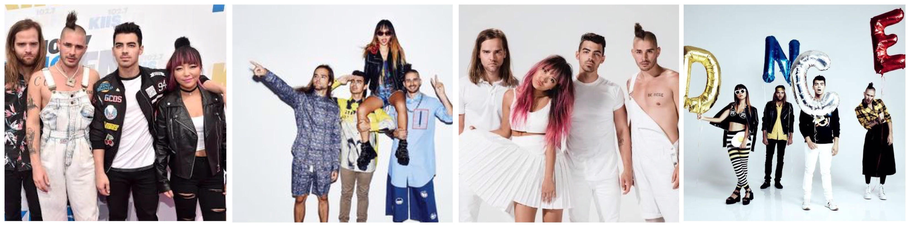

DNCE is a pop rock band that debuted on 2015 with their single "Cake by the Ocean." The story behind their name is one interesting event. They were writing songs on a late night and they were drunk. While writing the lyric "dance," a member misspelled the word by forgetting the A. The word DNCE stuck to them so they decided to name that to their band. They have an EP entitled "SWAAY" and on November 18, 2016, they released their first self-titled album. DNCE's fame is skyrocketing through the days and they are absolutely enjoying it. They're just a group of musicians who want to have fun.
